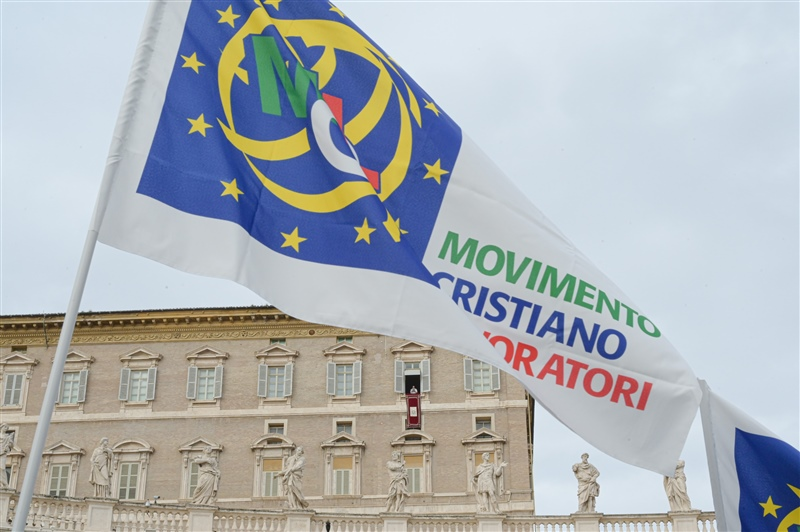
La storia del movimento attraverso foto e locandine
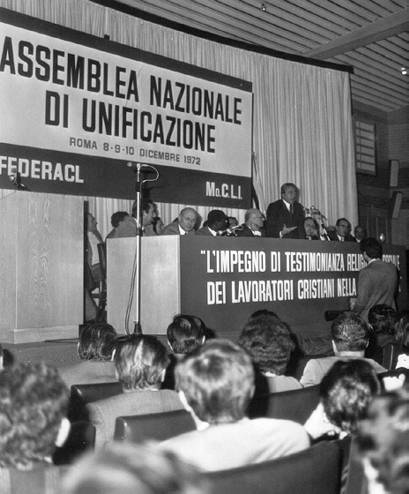
Primo Congresso Nazionale a Roma nel 1972
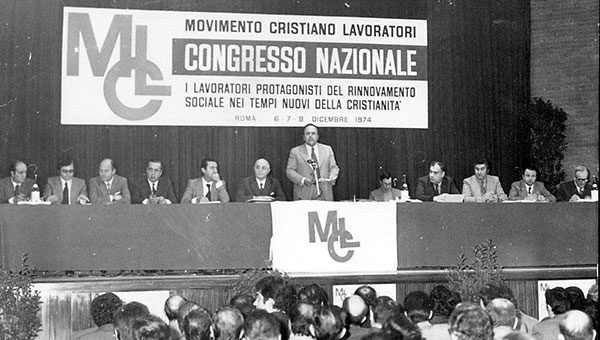
Secondo Congresso Nazionale a Roma nel 1974
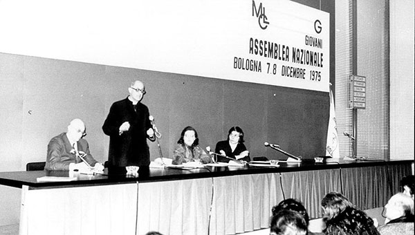
Primo Congresso Nazionale giovani a Bologna nel 1975
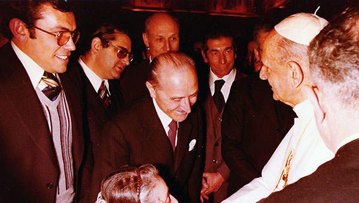
Udienza con il Papa Paolo VI
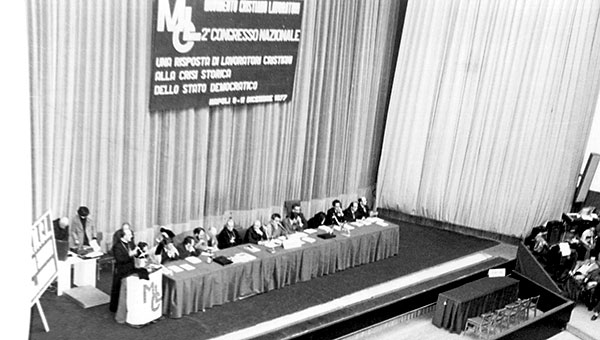
Secondo Congresso Nazionale a Napoli nel 1977
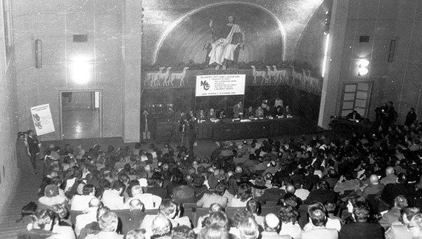
Terzo Congresso Nazionale a Roma nel 1980

Seconda Edizione di "Traguardi Sociali" organo di stampa ufficiale del MCL
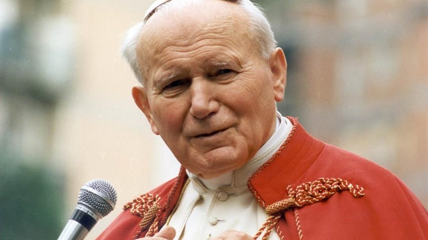
Decennale MCL incontro con Papa Giovanni Paolo II
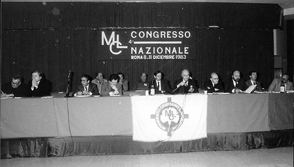
Quarto Congresso Nazionale a Roma nel 1983
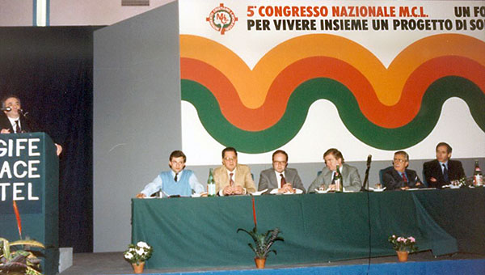
Quinto Congresso Nazionale a Roma nel 1986
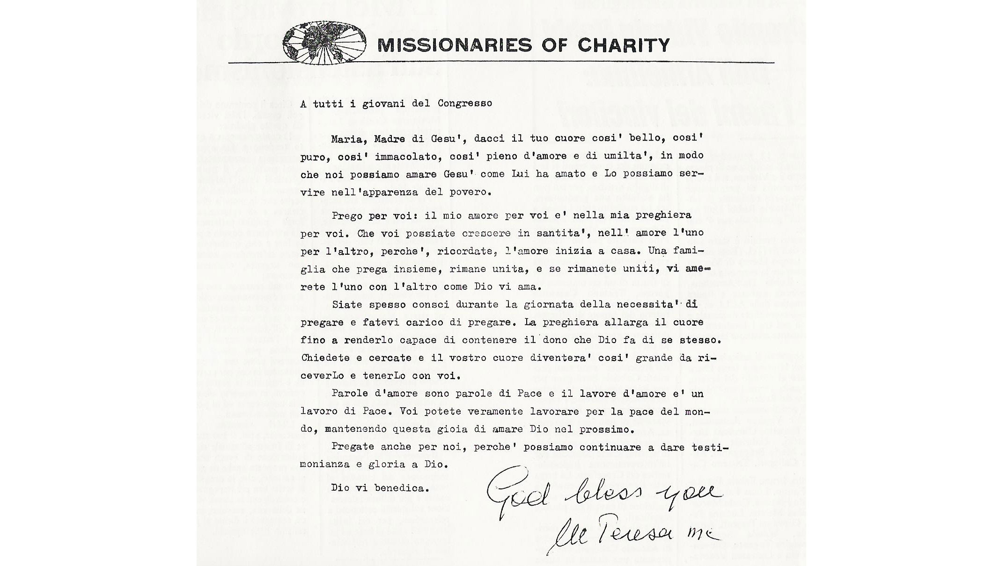
Madre Teresa di Calcutta scrive ai Giovani MCL una lettera sul tema "Libertà, un impegno per i giovani"
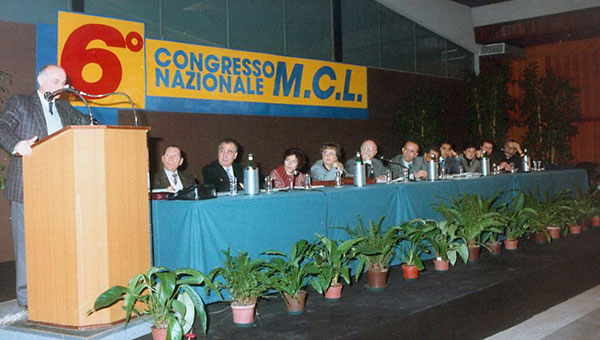
Sesto Congresso Nazionale a Chianciano Terme nel 1989
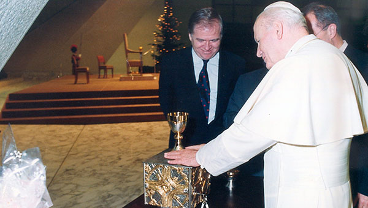
Ventennale MCL, udienza con Papa Giovanni Paolo II
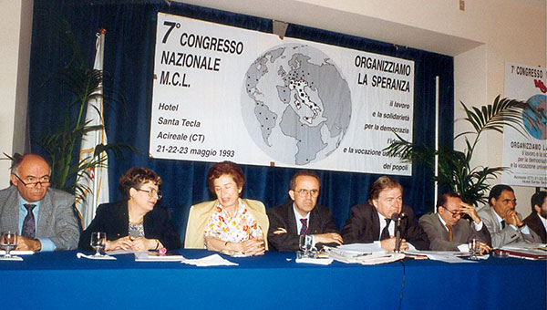
Settimo Congresso Nazionale a Santa Tecla,Acireale nel 1993
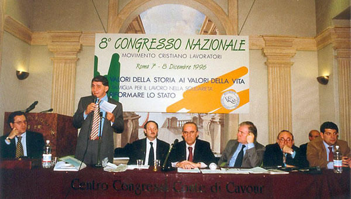
Ottavo Congresso Nazionale a Roma nel 1996
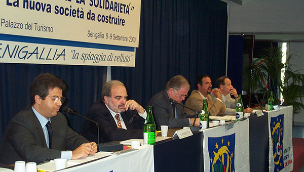
Seminario Nazionale di Studi a Senigallia nel 2000
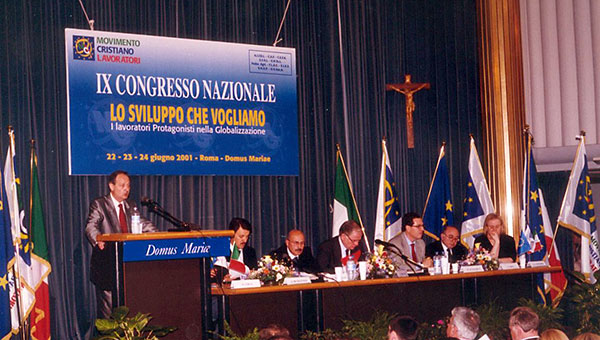
Nono Congresso Nazionale a Roma nel 2001

Terza Edizione di "Traguardi Sociali"
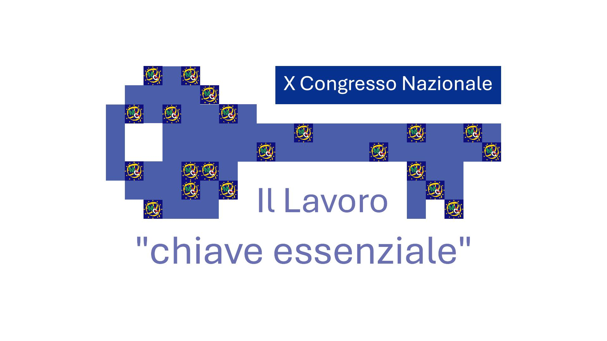
Decimo Congresso Nazionale 2005
Undicesimo Congresso Nazionale 2009

Incontro con il Papa Benedetto XVI
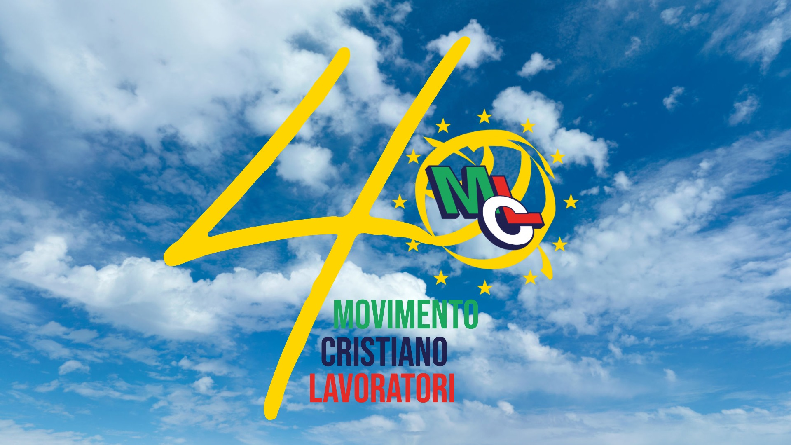
Quarantennale del Movimento Cristiano Lavoratori 2012
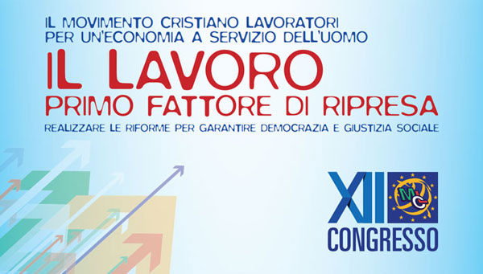